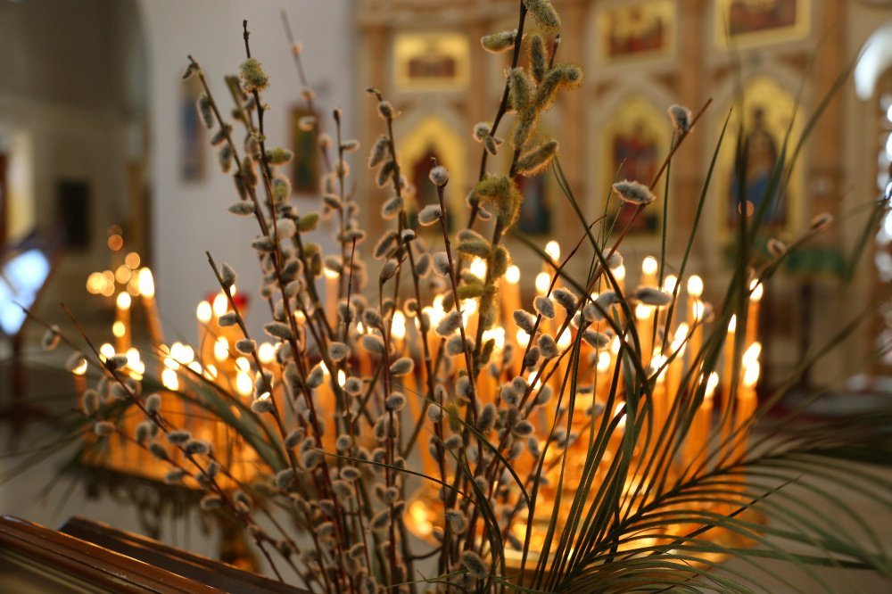
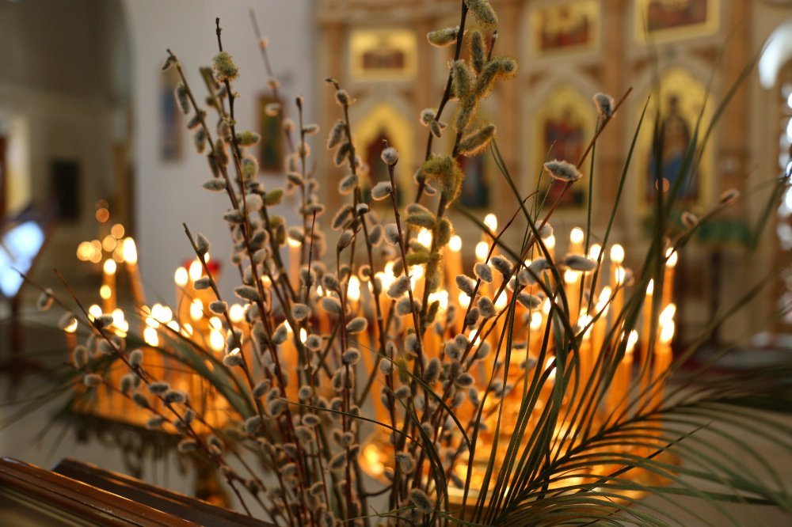

весна
Стихотворение про весну:
Еще светло перед окном,
В разрывы облак солнце блещет,
И воробей своим крылом,
В песке купаяся, трепещет. А уж от неба до земли,
Качаясь, движется завеса,
И будто в золотой пыли
Стоит за ней опушка леса. Две капли брызнули в стекло,
От лип душистым медом тянет,
И что-то к саду подошло,
По свежим листьям барабанит.
| Масленица | Пасха | День Победы |
| 8 марта | 1 апреля | Мир, труд, май |
| День радио | Вербное воскресенье | Прощеное воскресенье |
 
